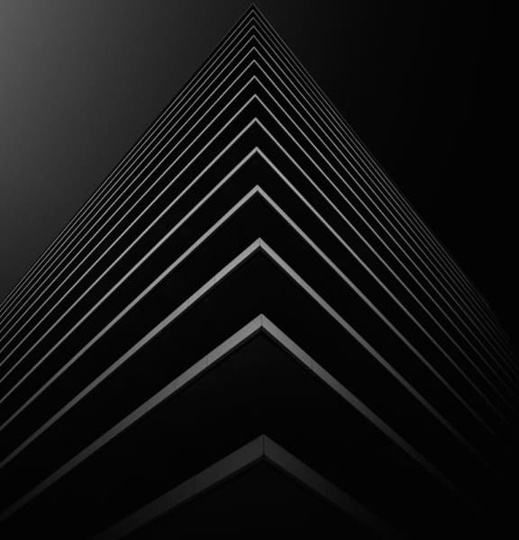
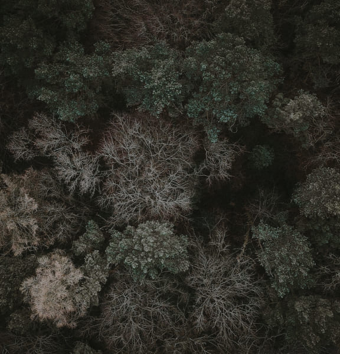
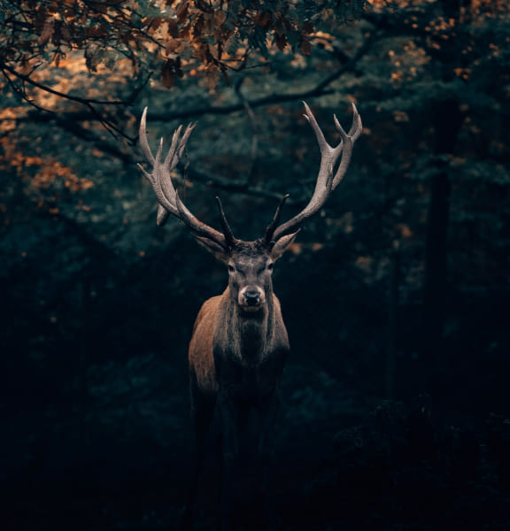
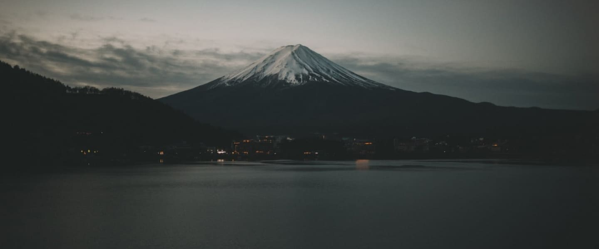
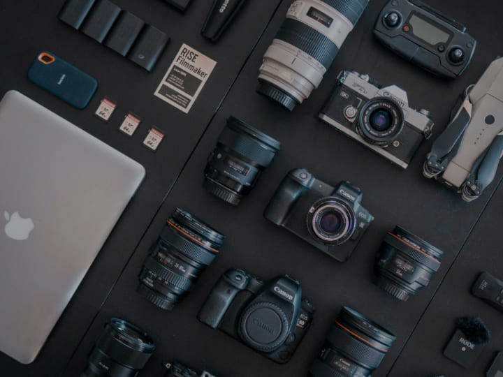
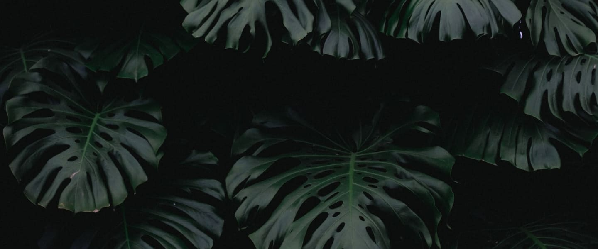
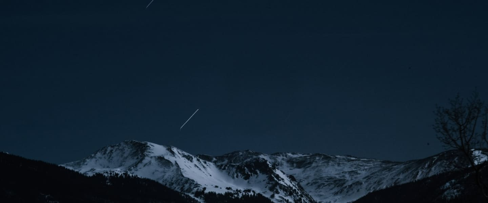

На фото получается именно то, что ты видишь в отражении
1/2000s
f/11
100
Iceland
Фотографии
Фотография это исскуство
Product Photography
Фотографии гаджетов - это что-то новое в вашей коллекции

Architecture Photography
Фотографии архитектуры - классический и нестандартный ракурс

Drone Photography
Фотографии с квадрокоптера - это всегда не обчныно и с полным обзором.

Wildlife Photography
Фотографии природы - это классические, красочные и яркие воспоминания

Закат на горе Фудзи
Чтобы не разочароваться, достигнув вершины, вам все равно нужно точно знать, в какое время на архипелаге восходит и заходит солнце.
1"
f/16
400
Japan
Наша аппаратура
Говорят, что "нигде не бывает скучно, если вы хорошо выспались ночью и у вас в кармане полно неэкспонированной пленки". Хотя в наши дни мы не снимаем (много) фильмов — это инструменты, которые мы на самом деле используем каждый день, чтобы запечатлеть удивительные вещи вокруг нас.

0.8
f/5,6
100
Sweden

Листья Монстеры
Монстера восхищает своим внешним видом, будоражит воображение мифами, которые с ней связаны, подкупает простотой ухода и удивляет тем, что имеет съедобные плоды. Недаром это раскидистое декоративное растение украшает многие дома.
1/400s
f/3,5
100
Costa Rica
Наши клиенты

Звездопад в Гималаях
Звезды – настоящее чудо, которое мы можем наблюдать своими глазами. Они являются ориентирами и маяками надежды, напоминая нам, что лучшее завтра еще впереди.